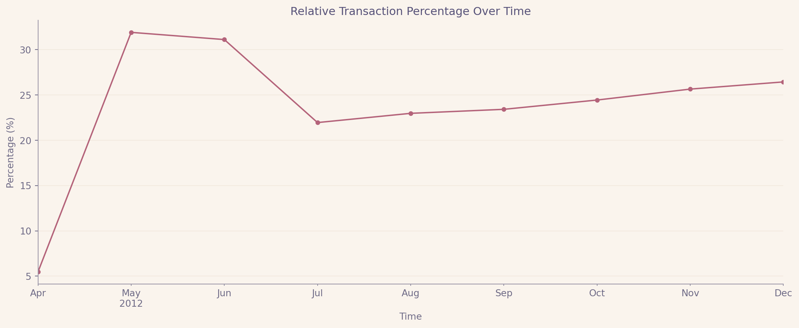
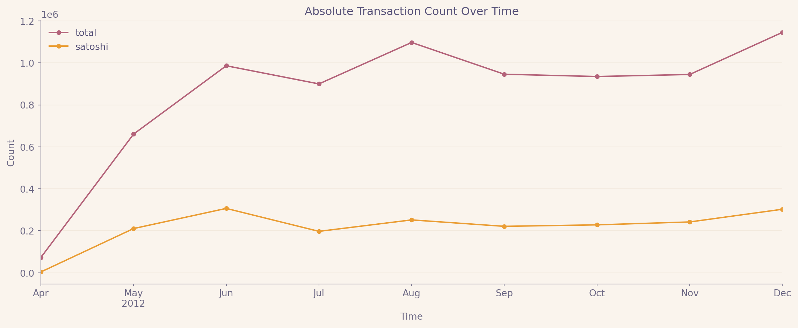
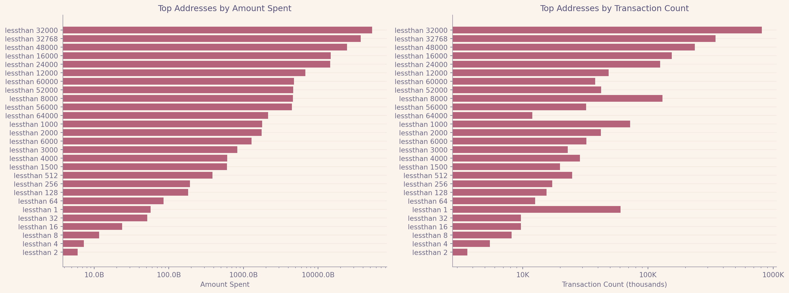
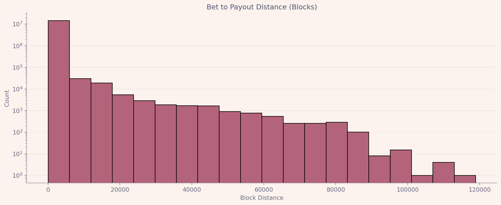
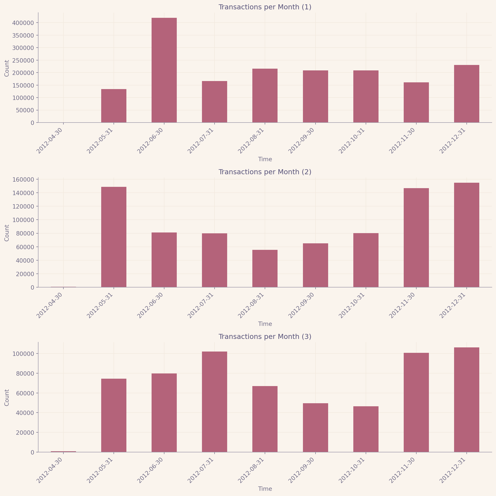
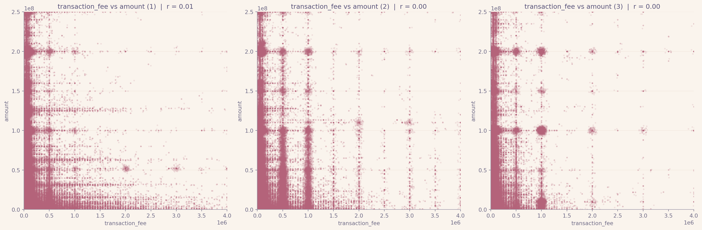
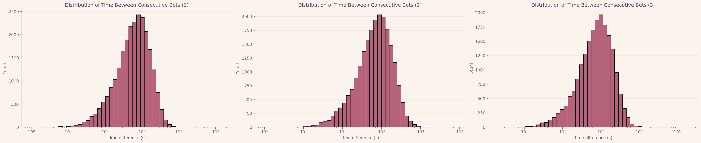
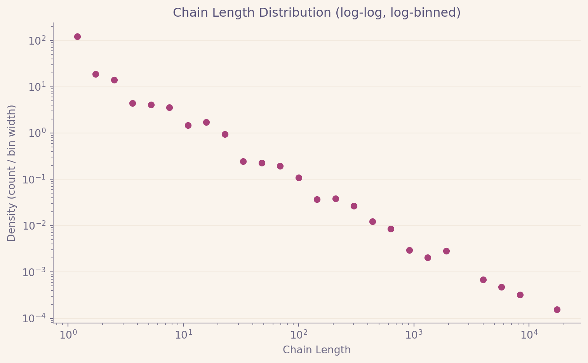

import pandas
pandas.set_option('display.max_columns', None)
pandas.set_option('display.width', None)
pandas.set_option('display.max_colwidth', None)
def read_dataset(name, columns):
return pandas.read_csv(f"./data/raw/{name}", header=None, engine='pyarrow', names=columns)
def save_parquet(dataframe: pandas.DataFrame, name):
return dataframe.to_parquet(f"./data/processed/{name}.parquet", index=False)
def read_parquet(name, columns=None):
return pandas.read_parquet(f"./data/processed/{name}.parquet", columns=columns)SatoshiDice analysis review
TODO: Make the notebook and pdf rose-pine-dawn colored
Analisi delle transazioni SatoshiDice
La seguente relazione analizzera’ i dati di transazioni bitcoin per ricavare informazioni sulle scommesse effettuate dagli utenti utilizzando il servizo di betting on-chain SatoshiDice.
Prima parte: analisi dei dati forniti
Prima di iniziare a effettuare le analisi sui dati grezzi forniti effettuo degli step di preprocessing per migliorare le performance e controllare che i dati siano coerenti con il funzionamento di una normale blockchain.
Preprocessing
I file .csv (e .tsv) verranno letti da data_loader.py (il codice seguente) per poi essere trasformati in file .parquet, un formato efficente per salvare dataframe pandas sul disco. Questi saranno i file che verranno importati da ogni script per l’analisi.
Warning
Sono pero’ presenti dei problemi nei file grezzi!
Transazioni invalide
Eseguendo dei test per verificare le garanzie dei file (es. valori nulli, righe invalide, format di timestamp) e’ risultato che siano presenti degli id di transazione duplicati!
from src.data_loading.data_loader import read_dataset
transactions = read_dataset("transactions.csv", ["timestamp", "transaction_block_id", "transaction_id", "is_codebase", "transaction_fee"])
duplicated = transactions.duplicated(subset=["transaction_id"], keep=False)
invalid_transactions = transactions[duplicated].sort_values("transaction_id")
print(invalid_transactions) timestamp transaction_block_id transaction_id is_codebase \
142572 1289723848 91722 142572 1
142841 1289781379 91880 142572 1
142726 1289757588 91812 142726 1
142783 1289768691 91842 142726 1
transaction_fee
142572 0
142841 0
142726 0
142783 0 In particolare 2 coppie di transazioni hanno lo stesso transaction_id, ma hanno diverso timestamp e block_id. Ipotizzo siano due transazioni distinte a cui e’ stato assegnato lo stesso id, ma per semplicita’ le escludo dalle analisi.
Output invalidi
Anche in outputs abbiamo un problema simile ma per motivi diversi.
from src.data_loading.data_loader import read_dataset
outputs = read_dataset("outputs.csv", ["transaction_id", "output_position", "output_address_id", "amount", "script_type"])
duplicated = outputs.duplicated(subset=["transaction_id", "output_position"], keep=False)
invalid_outputs = outputs[duplicated].sort_values("transaction_id")
print(invalid_outputs) transaction_id output_position output_address_id amount \
172980 142572 0 141029 5000000000
173305 142572 0 141029 5000000000
173166 142726 0 141187 5000000000
173237 142726 0 141187 5000000000
script_type
172980 1
173305 1
173166 1
173237 1 Nel dataset sono presenti due coppie con identico transaction_id e output_position. Questo significa che sono presenti nella stessa transazione due output_position identici, combinazione che dovrebbe essere univoca da protocollo bitcoin.
In questo caso pero’ le righe sono identiche sia per quanto riguarda output_address_id sia per amount quindi ipotizzo siano semplicemente duplicate. Anche in questo caso verranno escluse dall’analisi.
Schema delle transazioni
Per facilitare il modello mentale con cui ho approcciato le transazioni ho effettuato un merge preventivo di inputs, outputs e transactions. Questo dataframe espanso e’ il modo in cui verranno analizzate le transazioni per il resto dell’analisi, ogni riga rappresenta una parte della transazione con input (input_transaction_id e input_transaction_position), output (output_position) e metadati della transazione (amount, timestamp …).
import pandas
from src.data_loading.data_loader import read_dataset, save_parquet
inputs = read_dataset("inputs.csv", ["transaction_id", "input_transaction_id", "input_transaction_position"])
outputs = read_dataset("outputs.csv", ["transaction_id", "output_position", "output_address_id", "amount", "script_type"])
outputs = outputs.drop(columns=["script_type"])
invalid_outputs = outputs.duplicated(subset=["transaction_id", "output_position"], keep=False)
outputs = outputs[~invalid_outputs]
transactions = read_dataset("transactions.csv", ["timestamp", "transaction_block_id", "transaction_id", "is_codebase", "transaction_fee"])
transactions = transactions.drop(columns=["is_codebase"])
invalid_transactions = transactions.duplicated(subset=["transaction_id"], keep=False)
transactions = transactions[~invalid_transactions]
transactions["timestamp"] = pandas.to_datetime(transactions["timestamp"], unit="s")
complete_transactions = transactions.merge(inputs, how="left").merge(outputs, how="left")
mappings = read_dataset("mappings.csv", ["address_hash", "address_id"])
save_parquet(mappings, "mappings")
satoshi_dices = pandas.read_csv("./data/raw/satoshiDiceInfos.tsv", sep='\t')[["Name", "Address"]]
satoshi_dices.columns = ["name", "address_hash"]
satoshi_dices = satoshi_dices.merge(mappings)
complete_transactions["is_satoshi_bet"] = complete_transactions["output_address_id"].isin(satoshi_dices["address_id"])
save_parquet(complete_transactions, "transactions")
save_parquet(satoshi_dices, "satoshi_dices")
Tip
E’ stata inserita anche una nuova riga is_satoshi_bet che indica se la transazione e’ una scommessa
A questo punto il dataset e’ nel formato corretto per l’analisi e si possono cominciare a estrarre informazioni.
Analisi generali delle bet e dei payout
Transazioni di scommessa rispetto al numero complessivo di transazioni
Calcolo la percentuale di transazioni di bet rispetto al numero complessivo di transazioni. Sia in termini di percentuale, sia in termini di numero assoluto di transazioni.
import pandas
from src.plotting.plots import plot_absolute_transaction_percentage, plot_relative_transaction_percentage
from src.data_loading.data_loader import read_parquet
transactions = read_parquet("transactions", columns=["timestamp", "is_satoshi_bet", "amount", "transaction_id"])
satoshi_bets = transactions[transactions["is_satoshi_bet"]]
earliest_satoshi_bet_timestamp = satoshi_bets["timestamp"].min()
def resample(dataframe, start, time_step="1ME"):
return dataframe[dataframe["timestamp"].between(start, "2023-12-31")].resample(time_step, on="timestamp")
def resampled_amount(dataframe, start):
return resample(dataframe, start)["transaction_id"].nunique()
transactions_amount = resampled_amount(transactions, earliest_satoshi_bet_timestamp)
satoshi_bets_amount = resampled_amount(satoshi_bets, earliest_satoshi_bet_timestamp)
transactions_amount.name = None
satoshi_bets_amount.name = None
relative_amounts = (satoshi_bets_amount / transactions_amount * 100)
plot_relative_transaction_percentage(relative_amounts)
absolute_amounts = pandas.DataFrame({
"total": transactions_amount,
"satoshi": satoshi_bets_amount
})
plot_absolute_transaction_percentage(absolute_amounts)
<Figure size 672x480 with 0 Axes>
<Figure size 672x480 with 0 Axes>
Tip
La prima transazione verso il servizio SatoshiDice risale al 21 aprile 2012 mentre la prima transazione bitcoin risale al 3 gennaio 2009. Nel grafico viene mostrato solamente il periodo rilevante in cui e’ presente almeno una scommessa.
Popolarita’ di ogni indirizzo di betting
from src.plotting.plots import plot_satoshi_dice_popularity
from src.data_loading.data_loader import read_parquet
from src.data_loading.satoshi_dices_info import name, address_hash
transactions = read_parquet("transactions", columns=["is_satoshi_bet", "amount", "transaction_id", "output_address_id", "output_position"])
satoshi_bets = transactions[transactions["is_satoshi_bet"]]
satoshi_outputs = satoshi_bets.drop_duplicates(subset=["transaction_id", "output_address_id", "output_position"])[["output_address_id", "amount"]]
satoshi_bets_amount = satoshi_outputs.groupby(["output_address_id"]).agg(
amount=("amount", "sum"),
count=("amount", "count")
).reset_index()
satoshi_bets_amount["name"] = satoshi_bets_amount["output_address_id"].apply(address_hash).apply(name)
(
satoshi_bets_amount
.sort_values(by="amount", ascending=False)["output_address_id"]
.to_csv("./data/processed/sorted_satoshi_dices.csv", index=False, header=False)
)
plot_satoshi_dice_popularity(satoshi_bets_amount)
<Figure size 672x480 with 0 Axes>Due servizi hanno risultati particolari rispetto agli altri: less than 64000 e les than 1. Che hanno rispettivamente la probabilita’ di vincita piu’ alta e piu’ bassa.
Per less than 64000 possiamo notare che l’ammontare speso non riflette il numero di transazioni effettuate, cioe’ si tendono a fare meno scommesse ma con somme piu’ alte. Questo e’ spiegato dal fatto che e’ molto probabile vincere quindi per guadagnare le persone tengono a rischiare piu’ soldi perche’ sono piu’ sicure di guadagnare (nonostante il valore atteso sia comunque negativo per ogni transazione).
Per less than 1 notiamo l’opposto, ovvero le persone tendono a fare piu’ bet ma piccole. Questo e’ spiegato dal fatto che le persone sono quasi sicure di perdere per cui non investono troppi soldi in ogni singola scommessa ma l’indirizzo e’ nettamente piu’ popolare in termini di ammontare di transazioni.
E’ interessante il fatto che in termini di soldi spesi per le scommesse less than 64000 sia piu’ di 37 volte maggiore di less than 1 nonostante il valore atteso di less than 1 sia migliore.
Tip
Il risultato dell’ordinamento degli indirizzi e’ stato salvato in un file .csv perche’ sara’ necessario successivamente
Distanza tra scommessa e payout
from src.plotting.plots import plot_payout_distance_distribution
from src.data_loading.data_loader import read_parquet
import pandas
transactions = read_parquet("transactions", columns=["transaction_id", "transaction_block_id", "input_transaction_id", "is_satoshi_bet", "input_transaction_position", "output_position"])
# dropping transactions which don't have an input (which have not been spent yet)
transactions = transactions.dropna()
satoshi_payouts = pandas.merge(
transactions[transactions["is_satoshi_bet"]],
transactions,
left_on=["input_transaction_id", "input_transaction_position"],
right_on=["transaction_id", "output_position"]
)
block_delta = satoshi_payouts["transaction_block_id_x"] - satoshi_payouts["transaction_block_id_y"]
plot_payout_distance_distribution(block_delta)
<Figure size 672x480 with 0 Axes>
Tip
Il 24% delle transazioni ha 0 blocchi di distanza
Analisi sugli indirizzi di SatoshiDice piu’ popolari
I tre indirizzi piu’ popolari sono i seguenti
from src.data_loading.satoshi_dices_info import k_most_popular_dices, address_hash, name
popular_dices = [name(address_hash(dice)) for dice in k_most_popular_dices(3)]
print(popular_dices)['lessthan 32000', 'lessthan 32768', 'lessthan 48000']Indicati nei grafici come 1, 2 e 3
Distribuzione temporale delle bet
import pandas
from src.data_loading.data_loader import read_parquet
from src.plotting.plots import plot_time_distribution
from src.plotting.plot_map_popular import plot_map_popular
transactions = read_parquet("transactions")
satoshi_bets = transactions[transactions["is_satoshi_bet"]]
satoshi_bets.drop_duplicates(subset="transaction_id")
def temporal_distribution(bets: pandas.DataFrame, time_step = "1ME"):
return bets.resample(time_step, on="timestamp").size()
plot_map_popular(
amount_popular_dices=3,
bets_dataframe=satoshi_bets,
map_function=temporal_distribution,
plot_function=plot_time_distribution
)
<Figure size 672x480 with 0 Axes>Correlazione tra somma scommessa e commissione
from src.data_loading.data_loader import read_parquet
from src.plotting.plots import plot_bet_correlation
from src.plotting.plot_map_popular import plot_map_popular
transactions = read_parquet("transactions")
satoshi_bets = transactions[transactions["is_satoshi_bet"]]
satoshi_bets = satoshi_bets.drop_duplicates(subset=["transaction_id", "output_position"])
def identity(x):
return x
plot_map_popular(
amount_popular_dices=3,
bets_dataframe=satoshi_bets,
map_function=identity,
plot_function=plot_bet_correlation
)
<Figure size 672x480 with 0 Axes>Dato che i valori di correlazione sono prossimi allo 0 possiamo dedurne che non e’ presente una correlazione lineare. E’ possibile che sia presente una correlazione di forma non lineare, tra i vari test di correlazione effettuati non ho riscontrato nessun altra correlazione (es. inversa o di rango).
Ipotizzo che sia improbabile che una correlazione tra somma scommessa e commissione abbia una forma cosi’ complicata da non essere riscontrata da queste ulteriori verifiche ma non posso affermare con certezza che non ne esista una.
Tip
Sono presenti alcune linee verticali e orizzontali su cui si concentrano i punti, questi sono valori “interi” in cui tendono ad aggirarsi sia le quantita’ scommesse che i valori delle commissioni
Intervalli tra bet consecutive
import pandas
from src.data_loading.data_loader import read_parquet
from src.plotting.plots import plot_bet_distance
from src.plotting.plot_map_popular import plot_map_popular
transactions = read_parquet("transactions")
satoshi_bets = transactions[transactions["is_satoshi_bet"]]
satoshi_bets = satoshi_bets.drop_duplicates(subset="transaction_id")
def bet_distance(dataframe: pandas.DataFrame):
return dataframe.sort_values("transaction_block_id")["timestamp"].diff().dt.total_seconds()
plot_map_popular(
amount_popular_dices=3,
bets_dataframe=satoshi_bets,
map_function=bet_distance,
plot_function=plot_bet_distance
)
<Figure size 672x480 with 0 Axes>Seconda parte: analisi di sequenze di scommesse
Descrizione del dominio del problema
Una catena di bet e’ definita come una sequenza di transazioni in cui gli output di una sono l’input di un’altra, stabilendo quindi un legame diretto e tracciabile tra le transazioni.
Per ottenere delle catene lineari e facilmente interpretabili mi limito ad analizzare le simple bet.
Ovvero le transazioni della forma: - Un input - Un output a un indirizzo satoshi dice - Un altro output di resto
Due simple bet appartengono alla stessa catena se l’input della seconda coincide con l’output di resto della prima.
Calcolo dei risultati
import pandas
import networkx
from src.data_loading.satoshi_dices_info import k_most_popular_dices
from src.plotting.plots import plot_chain_length_distribution
from src.data_loading.data_loader import read_parquet
from src.analysis2.bet_chains_functions import simple_bets, transaction_connections, edges_attribute, save_to_csv
transactions = read_parquet(
"transactions",
columns=["transaction_id", "output_position", "input_transaction_id", "input_transaction_position", "output_address_id", "is_satoshi_bet"]
)
simple_bet_transactions = simple_bets(transactions)
simple_bet_connections = transaction_connections(simple_bet_transactions)
most_popular_dice_id = k_most_popular_dices(1)[0]
popular_simple_bets_connections = simple_bet_connections[simple_bet_connections["input_address"] == most_popular_dice_id]
G = networkx.from_pandas_edgelist(
popular_simple_bets_connections,
source="input_id",
target="output_id",
edge_attr=["output_address"],
create_using=networkx.DiGraph,
)
paths_nodes = [edges_attribute(G, component, "output_address") for component in networkx.weakly_connected_components(G)]
paths_lengths = [len(nodes) for nodes in paths_nodes]
length_distribution = pandas.Series(paths_lengths).value_counts().sort_index()
save_to_csv('./data/processed/simple_bet_chain_nodes.csv', paths_nodes)
plot_chain_length_distribution(length_distribution)
<Figure size 672x480 with 0 Axes>
Tip
La maggior parte del codice che gestisce le computazioni e’ nel file bet_chains_functions, lo snippet di codice qui sopra esprime in maniera chiara la pipeline di operazioni effettuate per trovare il risultato
E’ bene notare che il grafo ha una forma particolare. Per via del modo in cui e’ definita una catena di simple bet ha effettivamente solamente un input e un output rilevanti (dato che l’output verso satoshi dice non e’ utile per definire la forma dei cammini). Per cui il grafico e’ un insieme di cammini lineari e la libreria networkx fornisce una funzione per trovare le componenti debolmente connesse, che nel nostro caso calcola i cammini lineari.
Tip
Il grafico puo’ essere visto come una foresta di alberi degeneri o strutture simili a linked list
Terza parte: appartenenza delle catene a un wallet
Calcolo dei risultati
Nella sezione precedente sono stati trovati i nodi che appartengono ai cammini lineari, ora verra’ effettuata un’operazione di de-anonimizzazione (per quanto possibile) appoggiandosi al servizio Wallet Explorer per verificare se le intere catene di transazioni sono riconducibili a un singolo portafoglio.
from src.data_loading.address_to_wallet_mapping import get_wallet, load_cache, load_driver
import csv
from itertools import islice
import uuid
from collections import Counter
import pandas
def read_first_k_chains(filepath: str, k: int) -> list[list[str]]:
with open(filepath, newline="", encoding="utf-8") as f:
return list(islice(csv.reader(f), k))
cache = load_cache()
driver = load_driver()
bitcoin_address_chains = read_first_k_chains("./data/processed/simple_bet_chain_nodes.csv", 10)
wallet_address_chains = [[get_wallet(cache, driver, bitcoin_address) for bitcoin_address in chain] for chain in bitcoin_address_chains]
def summarize_chain(bitcoin_addresses: list[str], wallet_addresses: list[str]) -> dict:
dominant_wallet_address, dominant_wallet_count = Counter(wallet_addresses).most_common(1)[0]
return {
"id": uuid.uuid4(),
"chain_length": len(bitcoin_addresses),
"unique_addresses": len(set(bitcoin_addresses)),
"unique_wallets": len(set(wallet_addresses)),
"dominant_wallet": dominant_wallet_address,
"dominant_wallet_percentage": dominant_wallet_count / len(wallet_addresses) * 100,
}
chains_data = [summarize_chain(bitcoin_addresses, wallet_addresses)
for bitcoin_addresses, wallet_addresses in zip(bitcoin_address_chains, wallet_address_chains)]
chains_data = pandas.DataFrame(chains_data)
chains_data.to_csv("./outputs/deanonymized_chains.csv", index=None)
print(chains_data) id chain_length unique_addresses \
0 df94ce40-e700-4bbd-92f2-67e3b70b394d 716 716
1 d8792eba-9245-4f77-b102-0173aebecb1a 441 441
2 4f7bfda4-41e3-452e-ae69-4219064a8657 351 351
3 363ba56a-d2a0-4f9e-b903-735e0aab816a 292 292
4 2d74b9de-119f-4da8-b27e-0c5a81bf07bb 272 272
5 643493d7-cf69-4162-9f97-ce3b59420f8a 245 245
6 7601c213-5eb9-47b3-a947-0055ef24352d 242 242
7 84ff0e00-d896-4316-a96f-ea459447169f 234 234
8 9037d6af-bfff-4d09-a9e7-00a9ecacddd2 232 232
9 62593ef4-e3f9-4c16-9460-21714fd4fc08 228 228
unique_wallets dominant_wallet dominant_wallet_percentage
0 76 [0025d633f8] 50.139665
1 1 [00002c4379] 100.000000
2 5 [0025d633f8] 79.202279
3 5 [000f35cb33] 75.684932
4 2 [000305c34c] 99.632353
5 20 [001b861dc5] 54.285714
6 25 [004bf37491] 71.900826
7 11 [0005f727db] 88.034188
8 3 [0012ea9acf] 93.965517
9 36 [0012ea9acf] 78.508772
Warning
Le informazioni per associare gli indirizzi ai portafogli sono estratte dal sito WalletExplorer.com tramite web scraping in quanto requisito del progetto, il sito in realta’ fornisce un’API pubblica che permette di fare richieste di informazioni sugli indirizzi in batch
Il codice utilizza la libreria Selenium per aprire un’istanza di un browser che apre il sito e trova il nome del portafoglio associato tramite selezione per nome di classe.
I risultati vengono poi salvati in un file di cache cosi’ che le successive chiamate possano riutilizzarli.
Tip
Come identificatore per il risultato finale ho scelto di utilizzare degli uuid versione 4 per evitare di incorrere in problemi derivati dall’utilizzo di identificatori incrementali, come nel dataset iniziale del progetto
Considerazioni sui risultati
La maggior parte delle lunghe catene appartiene a un singolo wallet (nel caso della seconda piu’ lunga, tutta la catena). Questo conferma che le catene sono composte perlopiu’ da un unico utente che continua a scommettere i propri coin.